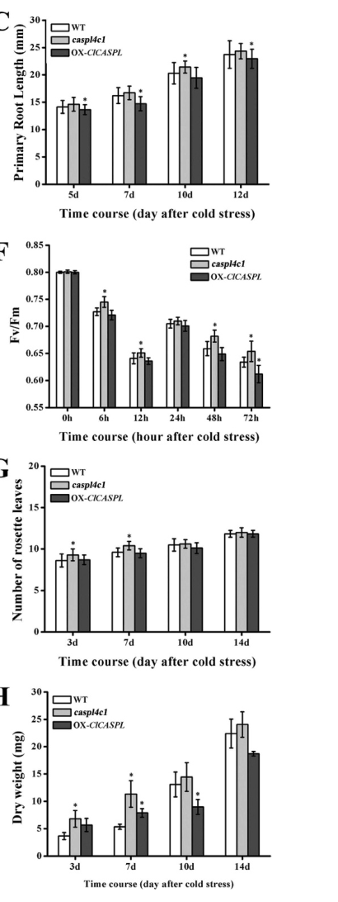

CASP-like protein 4C1 (AtCASPL4C1, At3g55390) is a small tetraspan (four-transmembrane) plasma-membrane protein of the CASP-like (CASPL) subfamily of the MARVEL-related Casparian strip membrane domain protein family (group 4C). It is the Arabidopsis ortholog of a cold-induced watermelon CASP-like gene (ClCASPL). AtCASPL4C1 is cold-inducible and broadly expressed, and acts as a negative regulator of growth, biomass and flowering time while modulating cold tolerance (knockout plants show faster growth, increased biomass and elevated cold tolerance without Casparian strip defects), indicating a role beyond root Casparian strip formation, possibly in vascular tissue. The protein localizes to the plasma membrane; no specific molecular function has been characterized.
| GO Term | Evidence | Action | Reason |
|---|---|---|---|
|
GO:0005886
plasma membrane
|
IEA
GO_REF:0000044 |
ACCEPT |
Summary: Correct, well-supported plasma-membrane localization for this multi-pass CASP-like protein.
Reason: UniProt annotates a multi-pass cell-membrane protein and the localization is independently confirmed experimentally (IDA, PMID:24920445).
Supporting Evidence:
file:ARATH/CASPL4C1/CASPL4C1-uniprot.txt
SUBCELLULAR LOCATION: Cell membrane
|
|
GO:0003674
molecular_function
|
ND
GO_REF:0000015 |
ACCEPT |
Summary: Root-level placeholder reflecting that no specific molecular function has been characterized.
Reason: No catalytic or transport activity is known for this CASP-like scaffold protein; the ND root annotation accurately reflects the absence of molecular-function data.
Supporting Evidence:
file:ARATH/CASPL4C1/CASPL4C1-goa.tsv
molecular_function
|
|
GO:0005575
cellular_component
|
ND
GO_REF:0000015 |
ACCEPT |
Summary: Root-level cellular_component placeholder; uninformative given the established plasma-membrane localization.
Reason: An ND root placeholder; it conflicts with nothing but adds no information beyond the plasma-membrane annotation.
Supporting Evidence:
file:ARATH/CASPL4C1/CASPL4C1-goa.tsv
cellular_component
|
Q: Through what molecular mechanism does AtCASPL4C1 restrain growth and modulate cold tolerance, and is its action localized to vascular tissue?
Experiment: Tissue-resolved expression and cold-response profiling of AtCASPL4C1, with growth/biomass/cold-tolerance phenotyping of knockout and overexpression lines and identification of interacting partners.
Type: genetic perturbation and stress phenotyping
The research report should be a detailed narrative explaining the function, biological processes, and localization of the gene product. Citations should be given for all claims.
You should prioritize authoritative reviews and primary scientific literature when conducting research. You can supplement
this with annotations you find in gene/protein databases, but these can be outdated or inaccurate.
We are specifically interested in the primary function of the gene - for enzymes, what reaction is catalyzed, and what is the substrate specificity? For transporters, what is the substrate? For structural proteins or adapters, what is the broader structural role? For signaling molecules, what is the role in the pathway.
We are interested in where in or outside the cell the gene product carries out its function.
We are also interested in the signaling or biochemical pathways in which the gene functions. We are less interested in broad pleiotropic effects, except where these elucidate the precise role.
Include evidence where possible. We are interested in both experimental evidence as well as inference from structure, evolution, or bioinformatic analysis. Precise studies should be prioritized over high-throughput, where available.
Target confirmed: The requested protein corresponds to Arabidopsis thaliana AtCASPL4C1 encoded by At3g55390 and annotated as CASP-like protein 4C1 (UniProt Q9M2U0). Yang et al. explicitly identify At3g55390 as “CASP-LIKE PROTEIN 4C1” and study it genetically in Arabidopsis using the T-DNA line SALK_034800C. (yang2015acasparianstrip pages 1-2, yang2015acasparianstrip pages 2-3)
Family/domain consistency check: The protein is a member of the broader CASP/CASPL (CASP-like) family, which sits within a plant-specific branch of the MARVEL superfamily and is typically a 4-transmembrane (4TM) topology protein group. (barbosa2023directedgrowthand pages 1-2, yang2015acasparianstrip pages 2-3)
Important disambiguation: Many papers discuss CASP1–CASP5 (canonical endodermal Casparian strip proteins) or CASPLs in other species; this report focuses only on evidence that directly addresses Arabidopsis AtCASPL4C1 (At3g55390/Q9M2U0), and uses broader CASP/CASPL literature only for carefully labeled inference/context. (barbosa2023directedgrowthand pages 3-4, barbosa2023directedgrowthand pages 1-2, yang2015acasparianstrip pages 1-2)
The Casparian strip (CS) is an aligned, lignin-impregnated cell-wall barrier in the root endodermis that restricts apoplastic diffusion. A specialized adjacent plasma-membrane region termed the Casparian strip membrane domain (CSD) is marked by CASP1–CASP5 proteins in Arabidopsis. (barbosa2023directedgrowthand pages 1-2)
CASPs (CASP1–5): Small 4TM proteins with strong endodermis-specific expression that form stable microdomains at the CSD. They contribute to organizing the CS into a continuous lignified band by promoting membrane–cell wall adhesion and creating a local membrane “exclusion zone” for other proteins. (barbosa2023directedgrowthand pages 1-2, barbosa2023directedgrowthand pages 12-13)
CASPLs (CASP-LIKE proteins): A larger Arabidopsis family (described as ~39 members) related to CASPs (plant MARVEL branch). CASPLs are reported to be expressed in many cell types and have been proposed to participate broadly in diverse cell wall modifications (e.g., suberization, abscission zone formation, pathogen-induced lignin deposition), but in at least one focused test, they did not compensate for the loss of canonical CASPs in early CS formation. (barbosa2023directedgrowthand pages 13-14, barbosa2023directedgrowthand pages 3-4, barbosa2023directedgrowthand pages 1-2)
For AtCASPL4C1, the best-supported functional statements are phenotype-based (growth and cold response) rather than enzymatic catalysis or transport: it is a membrane protein whose loss-of-function affects growth dynamics and cold tolerance, with no clear essential role shown for Casparian strip formation in the studied conditions. (yang2015acasparianstrip pages 3-6, yang2015acasparianstrip pages 6-9, yang2015acasparianstrip pages 1-2)
AtCASPL4C1 is predicted to encode a 4TM membrane protein (a hallmark of CASP/CASPL family members). Yang et al. report predicted transmembrane helices at approximately aa 36–56, 78–98, 119–139, and 160–180. (yang2015acasparianstrip pages 2-3)
Direct localization in Yang et al. is shown experimentally for the watermelon ortholog (ClCASPL) as a plasma membrane protein via ClCASPL–GFP co-localization with a plasma membrane RFP marker in tobacco, and the authors use this as evidence consistent with plasma-membrane localization for the Arabidopsis ortholog as well. (yang2015acasparianstrip pages 1-2, yang2015acasparianstrip pages 2-3)
Interpretation: For AtCASPL4C1 specifically, the strongest direct evidence in the retrieved sources supports membrane localization consistent with CASPL family topology, with experimental PM evidence shown for the ortholog and strong family-level support that CASP/CASPL proteins are 4TM membrane proteins. (barbosa2023directedgrowthand pages 1-2, yang2015acasparianstrip pages 2-3)
Using promoter–GUS reporters, AtCASPL4C1 was reported to be widely expressed: signal in roots (vascular cylinder; absent from root tip), emerged lateral roots, leaves, and multiple floral organs (filament, stigma, sepal), and siliques (but not seeds). This distinguishes AtCASPL4C1 from canonical endodermal CASPs (CASP1–5), which are more tightly associated with endodermal CSD function. (yang2015acasparianstrip pages 3-6, yang2015acasparianstrip pages 2-3)
Yang et al. report AtCASPL4C1 to be cold-inducible, with induction during a time course at 10°C and a reported transcript peak around ~48 h. (yang2015acasparianstrip pages 3-6, yang2015acasparianstrip pages 6-9)
Functional implication: The observed cold inducibility is consistent with the genetic evidence that AtCASPL4C1 is a negative regulator of cold tolerance in the tested experimental systems. (yang2015acasparianstrip pages 6-9, yang2015acasparianstrip pages 1-2)
Yang et al. used:
- A T-DNA knockout line for Arabidopsis AtCASPL4C1 (SALK_034800C). (yang2015acasparianstrip pages 1-2, yang2015acasparianstrip pages 2-3)
- Overexpression in Arabidopsis of the watermelon ortholog (OX-ClCASPL) for functional contrast. (yang2015acasparianstrip pages 1-2, yang2015acasparianstrip pages 2-3)
The AtCASPL4C1 knockout exhibited:
- Faster growth, increased biomass, and earlier flowering relative to wild type (Col-0) and the overexpression condition, with germination unchanged. (yang2015acasparianstrip pages 3-6, yang2015acasparianstrip pages 1-2)
The study reports statistical testing and replication: data shown as means ± SD, with n = 20 and significance indicated (e.g., p<0.05, and Tukey test indicated in figure legend). (yang2015acasparianstrip pages 1-2, yang2015acasparianstrip pages 9-10)
Cold stress designs included:
- 5-day-old seedlings transferred to 10°C for 7 days (root-growth phenotyping). (yang2015acasparianstrip pages 6-9, yang2015acasparianstrip pages 9-10)
- 21-day-old plants subjected to 10°C for 10 days (soil/substrate phenotypes, leaves, biomass). (yang2015acasparianstrip pages 6-9, yang2015acasparianstrip pages 9-10)
Measured outcomes included:
- Primary root length
- Chlorophyll fluorescence (Fv/Fm)
- Number of rosette leaves
- Dry weight/biomass
Across these metrics, the AtCASPL4C1 knockout showed improved cold performance relative to WT, while OX-ClCASPL tended to show greater cold sensitivity, consistent with AtCASPL4C1 acting as a negative regulator of cold tolerance in these assays. (yang2015acasparianstrip pages 6-9, yang2015acasparianstrip pages 1-2, yang2015acasparianstrip media d26b9df8)
Visual/quantitative figure evidence: Figure 7 (cropped panels with graphs and photo phenotypes) directly shows the time-course graphs (root length, Fv/Fm, rosette leaves, dry weight) and comparative plant phenotypes under cold treatment for WT vs AtCASPL4C1 knockout vs OX-ClCASPL. (yang2015acasparianstrip media d26b9df8, yang2015acasparianstrip media 27a8331e, yang2015acasparianstrip media 7b6965b2)
Despite the CASP-like family membership, AtCASPL4C1 knockout plants did not display significant changes in Casparian strip formation in the reported root assays. Yang et al. assessed barrier/CS-related readouts including propidium iodide (PI) staining conditions (e.g., 15 µM PI, 10 min on 5-day-old roots) and lignin staining, and reported that lignin staining indicative of CS presence was observed in knockout and controls. (yang2015acasparianstrip pages 3-6, yang2015acasparianstrip pages 2-3)
Yang et al. also report transcriptional changes in canonical CS markers: CASP1–CASP5 transcript levels were altered (e.g., CASP1 increased in the knockout; and CASP2–CASP5 increased in the knockout), consistent with potential compensatory responses or broader network effects, but without an overt CS structural phenotype for this locus under the tested conditions. (yang2015acasparianstrip pages 3-6)
A 2023 Nature Communications study provides a current mechanistic model for canonical CASPs (CASP1–5) in CS assembly. In a full CASP quintuple knockout, correctly positioned lignin microdomains can still form, but they are disorganized (excessive wall growth; lack of exclusion zone and matrix adhesion; impaired exocyst dynamics) and fail to fuse properly into an uninterrupted strip. (barbosa2023directedgrowthand pages 12-13, barbosa2023directedgrowthand pages 1-2)
Barbosa et al. further propose that CASP microdomains displace/evict secretory foci (including exocyst landmarks such as EXO70A1) to drive microdomain fusion into a continuous band, and proximity labeling (CASP1-turboID) identifies trafficking components (including RabA GTPases) enriched near CASP domains; dominant-negative RabAs cause a weak but consistent delay in barrier formation. (barbosa2023directedgrowthand pages 11-12, barbosa2023directedgrowthand pages 12-13)
In the same 2023 study, multiple CASPLs (not necessarily AtCASPL4C1) were tested for endodermal expression timing and genetic redundancy. Fluorescent CASPL fusions either showed no endodermal expression or expression too late to explain early lignin microdomains seen in casp mutants, and higher-order caspQ + multiple caspl knockouts did not exacerbate the caspQ phenotype. This supports an expert interpretation that CASPL proteins can be functionally distinct from CASP1–5 in the canonical CS pathway. (barbosa2023directedgrowthand pages 3-4, barbosa2023directedgrowthand pages 13-14)
Supported by direct genetics: Cold response biology and growth regulation (negative regulation of cold tolerance; negative effect on growth under normal conditions) is the strongest experimentally supported functional axis for AtCASPL4C1 in Arabidopsis. (yang2015acasparianstrip pages 6-9, yang2015acasparianstrip pages 1-2)
Inferred from family/domain and expression: Because AtCASPL4C1 is a 4TM CASPL-family membrane protein and broadly expressed (including vascular tissues), it may contribute to plasma membrane–cell wall microdomain organization or cell wall-related responses outside the canonical endodermal CSD. However, this remains inference, not a demonstrated biochemical mechanism for this exact gene in the retrieved literature. (barbosa2023directedgrowthand pages 13-14, yang2015acasparianstrip pages 3-6)
Barbosa et al. (2023-07, Nature Communications; https://doi.org/10.1038/s41467-023-37265-7) is a key recent advance in mechanistic understanding of how CASP microdomains organize wall deposition and integrate with trafficking (RabA/exocyst) during CS formation. Although it does not provide AtCASPL4C1-specific functional annotation, it strongly informs how CASP/CASPL family topology and microdomain behavior can translate into barrier formation phenotypes. (barbosa2023directedgrowthand pages 12-13, barbosa2023directedgrowthand pages 11-12, barbosa2023directedgrowthand pages 1-2)
Within the retrieved sources, no 2023–2024 primary paper was found that specifically functionally characterizes Arabidopsis AtCASPL4C1 (At3g55390/Q9M2U0) beyond the 2015 study. A 2024 Frontiers in Plant Science paper provides genome-wide CASPL family analysis in maize (bioinformatic, not Arabidopsis AtCASPL4C1-specific) and is therefore not used as direct functional evidence for the target locus. (xue2024genomewideidentificationand; not cited here for AtCASPL4C1-specific claims)
Implication for annotation: The most up-to-date, high-confidence mechanistic context is driven by CASP biology (2023), while the gene-specific functional evidence for AtCASPL4C1 remains anchored in the 2015 Arabidopsis genetics study. (barbosa2023directedgrowthand pages 1-2, yang2015acasparianstrip pages 1-2)
Because AtCASPL4C1 loss-of-function is associated with enhanced cold tolerance (with improvements across root growth, chlorophyll fluorescence, and biomass measures during cold treatment), the gene is a plausible candidate target for breeding/engineering cold resilience, subject to validation across backgrounds and environments. This is supported directly by controlled growth-chamber experiments comparing knockout vs WT vs overexpression conditions. (yang2015acasparianstrip pages 6-9, yang2015acasparianstrip media d26b9df8)
CASP microdomain biology is a key component of understanding and potentially manipulating the root apoplastic barrier (nutrient/water transport control; pathogen exclusion). However, AtCASPL4C1 itself is reported not to be required for CS formation in the tested assays, suggesting that applications aimed at Casparian strip engineering should focus primarily on CASP1–5 and upstream regulators rather than AtCASPL4C1. (yang2015acasparianstrip pages 3-6, barbosa2023directedgrowthand pages 1-2)
Best-supported primary function (gene-specific): AtCASPL4C1 appears to act as a negative regulator of growth and cold tolerance, based on Arabidopsis knockout phenotypes and cold-inducible expression. (yang2015acasparianstrip pages 6-9, yang2015acasparianstrip pages 1-2)
Cellular location: Evidence supports plasma membrane localization consistent with CASPL family 4TM topology; the strongest direct experimental localization in the retrieved sources is for the ortholog (ClCASPL-GFP at the plasma membrane), plus strong family-level support for 4TM membrane proteins. (yang2015acasparianstrip pages 2-3, barbosa2023directedgrowthand pages 1-2)
Role in Casparian strip: AtCASPL4C1 does not show a strong CS phenotype in the assays reported by Yang et al., and modern mechanistic studies reinforce that canonical CS formation relies heavily on CASP1–5, while tested CASPLs do not readily substitute for CASPs in early CS formation. (yang2015acasparianstrip pages 3-6, barbosa2023directedgrowthand pages 3-4, barbosa2023directedgrowthand pages 1-2)
Evidence limitations: The Arabidopsis AtCASPL4C1-specific functional literature retrieved here is dominated by a single primary report (2015), while the best 2023 mechanistic study focuses on CASP1–5 and select endodermal CASPLs (not necessarily AtCASPL4C1). Thus, mechanistic claims about AtCASPL4C1 beyond phenotypes should be treated as hypotheses. (barbosa2023directedgrowthand pages 3-4, yang2015acasparianstrip pages 3-6)
| Claim/Topic | Evidence summary | System/assay | Key quantitative/statistical details (as available) | Source (with year, journal, DOI URL) |
|---|---|---|---|---|
| Target identity and family assignment | AtCASPL4C1 is the Arabidopsis ortholog discussed for At3g55390 and is annotated as CASP-LIKE PROTEIN 4C1; it belongs to the CASP/CASPL family within the plant MARVEL-like superfamily. | Orthology/annotation and phylogenetic analysis | Arabidopsis CASP/CASPL family noted as 39-member UPF0497/CASPL-related set; gene studied via SALK_034800C knockout and ortholog overexpression. (yang2015acasparianstrip pages 1-2, yang2015acasparianstrip pages 2-3) | Yang et al. 2015, Scientific Reports, https://doi.org/10.1038/srep14299 |
| Protein topology | AtCASPL4C1 is predicted to encode a four-pass membrane protein, consistent with CASP/CASPL family topology. | Bioinformatic transmembrane prediction | Predicted TM helices at aa 36–56, 78–98, 119–139, and 160–180. (yang2015acasparianstrip pages 2-3) | Yang et al. 2015, Scientific Reports, https://doi.org/10.1038/srep14299 |
| Subcellular localization | The watermelon ortholog ClCASPL-GFP co-localized with a plasma-membrane RFP marker; Yang et al. use this to support plasma-membrane localization for the Arabidopsis ortholog AtCASPL4C1. | Transient expression of ClCASPL-GFP in tobacco with PM-RFP co-marker | Localization was exclusive to the plasma membrane in the heterologous assay. (yang2015acasparianstrip pages 1-2, yang2015acasparianstrip pages 2-3) | Yang et al. 2015, Scientific Reports, https://doi.org/10.1038/srep14299 |
| Expression pattern | AtCASPL4C1 is broadly expressed rather than root-endodermis-specific: promoter-GUS signal was seen in roots (vascular cylinder, not root tip), emerged lateral roots, leaves, floral organs, and siliques, but not seeds. | Promoter-GUS reporter lines plus in silico expression analysis | Broad organ expression; specifically noted as not root-predominant unlike canonical CASP1-5. (yang2015acasparianstrip pages 3-6, yang2015acasparianstrip pages 2-3) | Yang et al. 2015, Scientific Reports, https://doi.org/10.1038/srep14299 |
| Cold inducibility | AtCASPL4C1 transcript and promoter activity are induced by cold stress, supporting a role in cold-response biology. | Cold treatment time course with transcript analysis and GUS staining | Induction reported over 72 h at 10°C, with transcript peak around ~48 h after cold exposure. (yang2015acasparianstrip pages 3-6, yang2015acasparianstrip pages 6-9) | Yang et al. 2015, Scientific Reports, https://doi.org/10.1038/srep14299 |
| Knockout growth phenotype under normal conditions | Loss of AtCASPL4C1 increases growth vigor: mutant plants had slightly longer primary roots, faster growth, larger plants, increased biomass, and earlier flowering relative to WT and ClCASPL overexpressors. | SALK T-DNA knockout phenotyping on MS medium and soil | Means ± SD reported; n=20 stated for phenotyping; significance tested (Student's t-test in methods/legend, and Tukey test in figure legend). Exact values are figure-based rather than text-extracted. (yang2015acasparianstrip pages 3-6, yang2015acasparianstrip pages 1-2, yang2015acasparianstrip pages 9-10) | Yang et al. 2015, Scientific Reports, https://doi.org/10.1038/srep14299 |
| Cold tolerance phenotype | AtCASPL4C1 knockout shows enhanced cold tolerance, whereas overexpression of the watermelon ortholog in Arabidopsis increases cold sensitivity. | Seedling and soil-grown plant cold assays at 10°C; root growth, Fv/Fm, rosette leaf number, dry weight | Assays included 5-day-old seedlings shifted to 10°C for 7 d and 21-day-old plants exposed to 10°C for 10 d; mutant showed longer roots, higher Fv/Fm, more rosette leaves, and greater dry weight than WT/OX lines; statistical significance indicated in figures. (yang2015acasparianstrip pages 6-9, yang2015acasparianstrip pages 1-2, yang2015acasparianstrip pages 9-10, yang2015acasparianstrip media d26b9df8) | Yang et al. 2015, Scientific Reports, https://doi.org/10.1038/srep14299 |
| Casparian strip / barrier role of AtCASPL4C1 | Despite family membership, AtCASPL4C1 knockout did not show a significant Casparian strip defect in roots, implying its primary demonstrated role is not essential CS assembly. | PI barrier assay and lignin staining of roots; CASP1-5 transcript checks | PI staining used 15 µM PI for 10 min on 5-day-old roots; lignin staining remained present in WT, mutant, and OX lines; CASP1 increased in knockout and CASP2-5 also increased, suggesting compensatory/redundant transcriptional responses. (yang2015acasparianstrip pages 3-6, yang2015acasparianstrip pages 6-9, yang2015acasparianstrip pages 2-3) | Yang et al. 2015, Scientific Reports, https://doi.org/10.1038/srep14299 |
| CASP vs CASPL distinction in Arabidopsis root barrier biology | Canonical CASP1-5 are endodermis-specific, immobile, stable microdomain proteins required to organize proper Casparian strip membrane-wall microdomains; they shape exclusion zones and membrane-wall adhesion but are not strictly required to position initial lignin foci. | Quintuple CASP knockout, microscopy, proximity labeling, barrier and lignin assays | Full CASP knockout caused disorganized, excessively thick lignified foci and impaired exocyst dynamics; CASP1-turboID identified 332 enriched proteins, including RabA GTPases; dominant-negative RabAs caused a weak but reproducible delay in barrier formation. (barbosa2023directedgrowthand pages 12-13, barbosa2023directedgrowthand pages 11-12, barbosa2023directedgrowthand pages 1-2) | Barbosa et al. 2023, Nature Communications, https://doi.org/10.1038/s41467-023-37265-7 |
| Evidence that tested CASPLs do not substitute for CASPs in CS formation | Barbosa et al. examined endodermis-expressed CASPLs and found their expression timing/pattern did not explain early CS lignin microdomains; higher-order caspQ plus multiple caspl knockouts were not more severe than caspQ alone. | RNA-seq expression analysis, fluorescent CASPL fusions, undecuple mutant genetics | Seven CASPL1-clade members were examined; a caspQ 6x-caspl mutant showed no stronger phenotype than caspQ, arguing tested CASPLs are functionally distinct from CASPs in CS formation. (barbosa2023directedgrowthand pages 3-4, barbosa2023directedgrowthand pages 13-14) | Barbosa et al. 2023, Nature Communications, https://doi.org/10.1038/s41467-023-37265-7 |
| Functional interpretation for AtCASPL4C1 | Current direct evidence supports AtCASPL4C1 as a broadly expressed four-pass plasma-membrane CASPL protein that negatively regulates growth and cold tolerance, with no demonstrated essential role in Arabidopsis Casparian strip formation. | Synthesis of genetic, expression, localization, and barrier assays | Conclusion is based on one Arabidopsis T-DNA mutant study plus family-context work showing CASPLs are generally distinct from canonical CASPs in CS microdomain organization. (yang2015acasparianstrip pages 3-6, yang2015acasparianstrip pages 6-9, barbosa2023directedgrowthand pages 3-4, barbosa2023directedgrowthand pages 1-2) | Yang et al. 2015, Scientific Reports, https://doi.org/10.1038/srep14299; Barbosa et al. 2023, Nature Communications, https://doi.org/10.1038/s41467-023-37265-7 |
Table: This table consolidates the key experimental evidence for Arabidopsis AtCASPL4C1 (Q9M2U0/At3g55390), including localization, expression, cold-response phenotypes, and Casparian strip relevance. It also distinguishes the specific role of canonical CASPs from broader CASPL family members using the 2023 CASP microdomain study.
Barbosa I.C.R. et al. “Directed growth and fusion of membrane-wall microdomains requires CASP-mediated inhibition and displacement of secretory foci.” Nature Communications (Publication: 2023-07). DOI URL: https://doi.org/10.1038/s41467-023-37265-7 (barbosa2023directedgrowthand pages 12-13, barbosa2023directedgrowthand pages 11-12, barbosa2023directedgrowthand pages 1-2)
Yang J. et al. “A Casparian strip domain-like gene, CASPL, negatively alters growth and cold tolerance.” Scientific Reports (Publication: 2015-09). DOI URL: https://doi.org/10.1038/srep14299 (yang2015acasparianstrip pages 6-9, yang2015acasparianstrip pages 1-2, yang2015acasparianstrip media d26b9df8)
References
(yang2015acasparianstrip pages 1-2): Jinghua Yang, Changqing Ding, Baochen Xu, Cuiting Chen, Reena Narsai, Jim Whelan, Zhongyuan Hu, and Mingfang Zhang. A casparian strip domain-like gene, caspl, negatively alters growth and cold tolerance. Scientific Reports, Sep 2015. URL: https://doi.org/10.1038/srep14299, doi:10.1038/srep14299. This article has 40 citations and is from a peer-reviewed journal.
(yang2015acasparianstrip pages 2-3): Jinghua Yang, Changqing Ding, Baochen Xu, Cuiting Chen, Reena Narsai, Jim Whelan, Zhongyuan Hu, and Mingfang Zhang. A casparian strip domain-like gene, caspl, negatively alters growth and cold tolerance. Scientific Reports, Sep 2015. URL: https://doi.org/10.1038/srep14299, doi:10.1038/srep14299. This article has 40 citations and is from a peer-reviewed journal.
(barbosa2023directedgrowthand pages 1-2): Inês Catarina Ramos Barbosa, D. De Bellis, Isabelle Flückiger, E. Bellani, Mathieu Grangé-Guerment, Kian Hématy, and N. Geldner. Directed growth and fusion of membrane-wall microdomains requires casp-mediated inhibition and displacement of secretory foci. Nature Communications, Jul 2023. URL: https://doi.org/10.1038/s41467-023-37265-7, doi:10.1038/s41467-023-37265-7. This article has 33 citations and is from a highest quality peer-reviewed journal.
(barbosa2023directedgrowthand pages 3-4): Inês Catarina Ramos Barbosa, D. De Bellis, Isabelle Flückiger, E. Bellani, Mathieu Grangé-Guerment, Kian Hématy, and N. Geldner. Directed growth and fusion of membrane-wall microdomains requires casp-mediated inhibition and displacement of secretory foci. Nature Communications, Jul 2023. URL: https://doi.org/10.1038/s41467-023-37265-7, doi:10.1038/s41467-023-37265-7. This article has 33 citations and is from a highest quality peer-reviewed journal.
(barbosa2023directedgrowthand pages 12-13): Inês Catarina Ramos Barbosa, D. De Bellis, Isabelle Flückiger, E. Bellani, Mathieu Grangé-Guerment, Kian Hématy, and N. Geldner. Directed growth and fusion of membrane-wall microdomains requires casp-mediated inhibition and displacement of secretory foci. Nature Communications, Jul 2023. URL: https://doi.org/10.1038/s41467-023-37265-7, doi:10.1038/s41467-023-37265-7. This article has 33 citations and is from a highest quality peer-reviewed journal.
(barbosa2023directedgrowthand pages 13-14): Inês Catarina Ramos Barbosa, D. De Bellis, Isabelle Flückiger, E. Bellani, Mathieu Grangé-Guerment, Kian Hématy, and N. Geldner. Directed growth and fusion of membrane-wall microdomains requires casp-mediated inhibition and displacement of secretory foci. Nature Communications, Jul 2023. URL: https://doi.org/10.1038/s41467-023-37265-7, doi:10.1038/s41467-023-37265-7. This article has 33 citations and is from a highest quality peer-reviewed journal.
(yang2015acasparianstrip pages 3-6): Jinghua Yang, Changqing Ding, Baochen Xu, Cuiting Chen, Reena Narsai, Jim Whelan, Zhongyuan Hu, and Mingfang Zhang. A casparian strip domain-like gene, caspl, negatively alters growth and cold tolerance. Scientific Reports, Sep 2015. URL: https://doi.org/10.1038/srep14299, doi:10.1038/srep14299. This article has 40 citations and is from a peer-reviewed journal.
(yang2015acasparianstrip pages 6-9): Jinghua Yang, Changqing Ding, Baochen Xu, Cuiting Chen, Reena Narsai, Jim Whelan, Zhongyuan Hu, and Mingfang Zhang. A casparian strip domain-like gene, caspl, negatively alters growth and cold tolerance. Scientific Reports, Sep 2015. URL: https://doi.org/10.1038/srep14299, doi:10.1038/srep14299. This article has 40 citations and is from a peer-reviewed journal.
(yang2015acasparianstrip pages 9-10): Jinghua Yang, Changqing Ding, Baochen Xu, Cuiting Chen, Reena Narsai, Jim Whelan, Zhongyuan Hu, and Mingfang Zhang. A casparian strip domain-like gene, caspl, negatively alters growth and cold tolerance. Scientific Reports, Sep 2015. URL: https://doi.org/10.1038/srep14299, doi:10.1038/srep14299. This article has 40 citations and is from a peer-reviewed journal.
(yang2015acasparianstrip media d26b9df8): Jinghua Yang, Changqing Ding, Baochen Xu, Cuiting Chen, Reena Narsai, Jim Whelan, Zhongyuan Hu, and Mingfang Zhang. A casparian strip domain-like gene, caspl, negatively alters growth and cold tolerance. Scientific Reports, Sep 2015. URL: https://doi.org/10.1038/srep14299, doi:10.1038/srep14299. This article has 40 citations and is from a peer-reviewed journal.
(yang2015acasparianstrip media 27a8331e): Jinghua Yang, Changqing Ding, Baochen Xu, Cuiting Chen, Reena Narsai, Jim Whelan, Zhongyuan Hu, and Mingfang Zhang. A casparian strip domain-like gene, caspl, negatively alters growth and cold tolerance. Scientific Reports, Sep 2015. URL: https://doi.org/10.1038/srep14299, doi:10.1038/srep14299. This article has 40 citations and is from a peer-reviewed journal.
(yang2015acasparianstrip media 7b6965b2): Jinghua Yang, Changqing Ding, Baochen Xu, Cuiting Chen, Reena Narsai, Jim Whelan, Zhongyuan Hu, and Mingfang Zhang. A casparian strip domain-like gene, caspl, negatively alters growth and cold tolerance. Scientific Reports, Sep 2015. URL: https://doi.org/10.1038/srep14299, doi:10.1038/srep14299. This article has 40 citations and is from a peer-reviewed journal.
(barbosa2023directedgrowthand pages 11-12): Inês Catarina Ramos Barbosa, D. De Bellis, Isabelle Flückiger, E. Bellani, Mathieu Grangé-Guerment, Kian Hématy, and N. Geldner. Directed growth and fusion of membrane-wall microdomains requires casp-mediated inhibition and displacement of secretory foci. Nature Communications, Jul 2023. URL: https://doi.org/10.1038/s41467-023-37265-7, doi:10.1038/s41467-023-37265-7. This article has 33 citations and is from a highest quality peer-reviewed journal.

id: Q9M2U0
gene_symbol: CASPL4C1
product_type: PROTEIN
status: DRAFT
taxon:
id: NCBITaxon:3702
label: Arabidopsis thaliana
description: CASP-like protein 4C1 (AtCASPL4C1, At3g55390) is a small tetraspan (four-transmembrane) plasma-membrane
protein of the CASP-like (CASPL) subfamily of the MARVEL-related Casparian strip membrane domain protein
family (group 4C). It is the Arabidopsis ortholog of a cold-induced watermelon CASP-like gene (ClCASPL).
AtCASPL4C1 is cold-inducible and broadly expressed, and acts as a negative regulator of growth, biomass
and flowering time while modulating cold tolerance (knockout plants show faster growth, increased biomass
and elevated cold tolerance without Casparian strip defects), indicating a role beyond root Casparian
strip formation, possibly in vascular tissue. The protein localizes to the plasma membrane; no specific
molecular function has been characterized.
existing_annotations:
- term:
id: GO:0005886
label: plasma membrane
evidence_type: IEA
original_reference_id: GO_REF:0000044
qualifier: located_in
review:
summary: Correct, well-supported plasma-membrane localization for this multi-pass CASP-like protein.
action: ACCEPT
reason: UniProt annotates a multi-pass cell-membrane protein and the localization is independently
confirmed experimentally (IDA, PMID:24920445).
supported_by:
- reference_id: file:ARATH/CASPL4C1/CASPL4C1-uniprot.txt
supporting_text: 'SUBCELLULAR LOCATION: Cell membrane'
- term:
id: GO:0003674
label: molecular_function
evidence_type: ND
original_reference_id: GO_REF:0000015
qualifier: enables
review:
summary: Root-level placeholder reflecting that no specific molecular function has been characterized.
action: ACCEPT
reason: No catalytic or transport activity is known for this CASP-like scaffold protein; the ND root
annotation accurately reflects the absence of molecular-function data.
supported_by:
- reference_id: file:ARATH/CASPL4C1/CASPL4C1-goa.tsv
supporting_text: molecular_function
- term:
id: GO:0005575
label: cellular_component
evidence_type: ND
original_reference_id: GO_REF:0000015
qualifier: is_active_in
review:
summary: Root-level cellular_component placeholder; uninformative given the established plasma-membrane
localization.
action: ACCEPT
reason: An ND root placeholder; it conflicts with nothing but adds no information beyond the plasma-membrane
annotation.
supported_by:
- reference_id: file:ARATH/CASPL4C1/CASPL4C1-goa.tsv
supporting_text: cellular_component
references:
- id: file:ARATH/CASPL4C1/CASPL4C1-uniprot.txt
title: UniProtKB reviewed entry for CASPL4C1
findings:
- statement: CASPL4C1 is a multi-pass cell-membrane CASP-like protein of the Casparian strip membrane
proteins family.
- id: file:ARATH/CASPL4C1/CASPL4C1-goa.tsv
title: QuickGO GOA annotations for CASPL4C1
findings:
- statement: GOA supplied the existing annotations reviewed in this file.
- id: PMID:24920445
title: Functional and evolutionary analysis of the CASPARIAN STRIP MEMBRANE DOMAIN PROTEIN family.
findings:
- statement: Defines the CASP/CASPL family and unified nomenclature; places CASPL4C1 in the divergent
CASP-like subfamily of plasma-membrane tetraspan scaffolds.
reference_review:
relevance: HIGH
correctness: VERIFIED
review_notes: PubMed-verified family-defining paper.
- id: GO_REF:0000044
title: Gene Ontology annotation based on UniProtKB/Swiss-Prot Subcellular Location vocabulary mapping
findings:
- statement: Supplied the IEA plasma membrane annotation.
- id: GO_REF:0000015
title: Gene Ontology annotation through association of InterPro records with GO terms
findings:
- statement: Supplied the ND root-level molecular_function/cellular_component placeholders.
- id: PMID:26399665
title: A Casparian strip domain-like gene, CASPL, negatively alters growth and cold tolerance.
findings:
- statement: AtCASPL4C1 (At3g55390; ortholog of watermelon ClCASPL) localizes to the plasma membrane,
is cold-inducible, and negatively regulates growth, biomass and flowering while modulating cold
tolerance, acting beyond root Casparian strip formation, possibly in vascular tissue.
reference_review:
relevance: HIGH
correctness: VERIFIED
review_notes: PubMed-verified (full text cached). Primary functional study of AtCASPL4C1 / ClCASPL.
- id: file:ARATH/CASPL4C1/CASPL4C1-deep-research-falcon.md
title: Falcon (Edison) deep-research report for CASPL4C1
findings:
- statement: 'Deep-research synthesis: AtCASPL4C1 is a broadly expressed four-pass plasma-membrane CASPL
that negatively regulates growth and modulates cold tolerance, with no demonstrated essential role
in Casparian strip formation; no post-2015 Arabidopsis-specific functional study found.'
core_functions:
- description: Plasma-membrane CASP-like protein that negatively regulates growth/biomass/flowering and
modulates cold tolerance, with no characterized molecular (enzymatic/transport) activity.
supported_by:
- reference_id: PMID:26399665
supporting_text: an important role in cold tolerance
- reference_id: PMID:26399665
supporting_text: ClCASPL-GFP is localized in the plasma membrane
locations:
- id: GO:0005886
label: plasma membrane
proposed_new_terms: []
suggested_questions:
- question: Through what molecular mechanism does AtCASPL4C1 restrain growth and modulate cold tolerance,
and is its action localized to vascular tissue?
suggested_experiments:
- description: Tissue-resolved expression and cold-response profiling of AtCASPL4C1, with growth/biomass/cold-tolerance
phenotyping of knockout and overexpression lines and identification of interacting partners.
experiment_type: genetic perturbation and stress phenotyping
{kind=link}